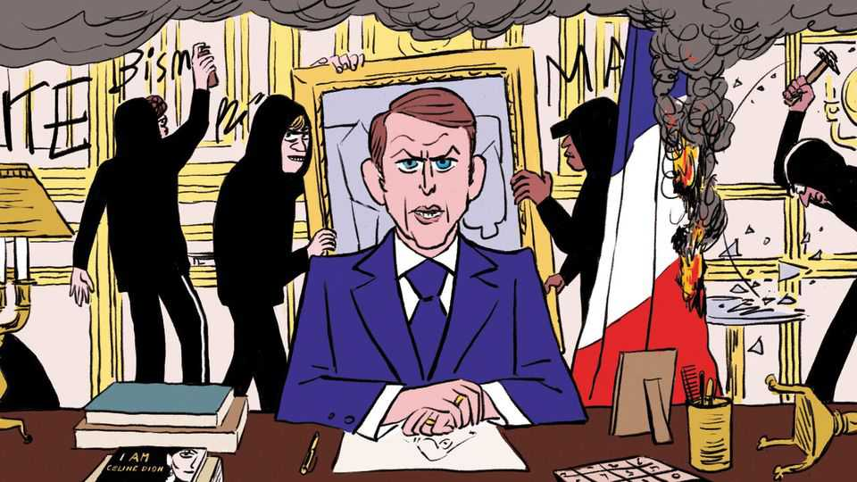

How France became ungovernable at home yet unstoppable in Brussels
The paradox of Parisian power

Oct 22nd 2026
There are better ways to vaunt the merits of your economic model than setting fire to your capital. But tell that to the French. In recent years protests have become such a fixture of national life it is hard to see when one set of manifestations ends and the next begins. Everyone from students to pensioners seems to walk about in a perennial huff. The political class is at war with itself, wondering if an unloved president will soon make way for a populist rabble-rouser. Bond vigilantes are giving a bloody nose to the over-indebted government in Paris, demanding ever-higher yields to finance its runaway budgets. The recent spate of violence gives the impression of a state at once bloated and overmatched. As always, the situation looks somewhat less dire from inside France than it does to outsiders. Still, who would want to emulate the policies of a place that seems so firmly on the skids?
Moi! Moi! Moi! is the refrain from France’s neighbours in the European Union. For even as Paris reeks of tear gas, ideas promoted by French officialdom for decades have become ascendant in EU circles. Particularly on economic matters, French thinking is being copy-pasted into statute books in Brussels. France may be running out of money, political stability and public patience; it is not running out of influence. A country that plenty think ought to serve as a cautionary tale is instead being treated as a blueprint. Call it the paradox of Parisian power: even as French politicians lose the ability to govern at home, they are tightening their ideological grip on Europe.
Brussels was once a place where France’s instincts for state intervention collided with Germany’s faith in markets and (relatively) free trade—and usually lost. The EU’s institutions have long had a liberal bent that blunted France’s big-state, dirigiste preferences. The club’s rules prevented national governments from meddling in industrial matters by doling out money to favoured firms and so forth. (The French got generous farming subsidies in return.) Far from protecting national champions, the EU was usually minded to let domestic firms face competition from both within the bloc and outside. Parisian policymakers fumed at the hemming-in of the state’s capacity to do something. From the outset of his presidency a decade ago, Emmanuel Macron warned it was resulting in Europe losing its “strategic autonomy”—broadly, the ability for the continent to act independently in a world increasingly dominated by America and China. Many in the club dismissed this as a bit of Gallic eccentricity, along with the penchant for escargots and taking August off.
No longer. These days French-infused scepticism of globalisation and unfettered markets is close to being orthodoxy. Those EU rules preventing public money from being showered onto national champions are all but forgotten: subsidies once considered evidence of economic illiteracy (including by this newspaper, often) are now presented as proof of strategic sophistication. “Industrial policy” has gone from taboo to mainstream. The French idea that Europe has been naive—practising economic self-restraint while America and China brazenly pursue economic self-interest—is now commonplace. Free trade is still tolerated, but only insofar as it does not interfere with broader aims of Europe recouping some measure of economic sovereignty.
How did French ideas triumph, even as France has seemingly gone off the rails? In part, because what once looked like Parisian paranoia has come to seem like foresight. Many in the EU sniggered when Mr Macron in 2019 warned in an interview with The Economist that Europe risked being “no longer in control of its destiny”. Events proved him right. Covid-19 made globe-spanning supply chains spawned by free-trade evangelists seem less clever to some. Russia’s invasion of Ukraine in 2022 underscored how relying on imports—in this case, of natural gas—brought with it unwanted dependencies (of the sort China went on to exploit with niche raw materials). And maybe, just maybe, generations of French presidents had been right to warn that America might one day prove an unreliable guarantor of European security.
Internal dynamics in the union have helped France’s cause, too. Brexit deprived the EU of a power whose raison d’être was to resist Gallic-infused thinking in Brussels. More recently Germany has made a startling pivot to support French economic interventionism, finding free trade much less appealing as Chinese firms started competing effectively with its own carmakers. Consider a slew of “Made in Europe” plans put forward by the EU’s industry commissioner, Stéphane Séjourné, a Frenchman close to Mr Macron. They advocate earmarking public spending for EU firms. Such protectionism would once have been dismissed out of hand by officials in Berlin. Now they merely want to make sure at least some allies such as Britain and Canada are included in an expanded definition of Europe. The aim is to water down French plans, not thwart them.
For those Europeans already uneasy about importing France’s Colbertist instincts, there is a more unsettling thought: Mr Macron may prove the moderate version of France’s attempt to remake the EU. Marine Le Pen, the populist currently leading the polls, would seek to recast the EU along more nationalist lines.
Will adopting French ideas end up hobbling Europe, as it seemingly has France? Not necessarily. There is a difference between a state that intervenes strategically and one that spends indiscriminately. France’s predicament offers lessons in both. Mr Macron was right to warn that Europe needs greater autonomy from foreign foes. But a country that cannot control its own finances has precious little autonomy either. France got the diagnosis right. It is a pity it made such a mess of the treatment.■